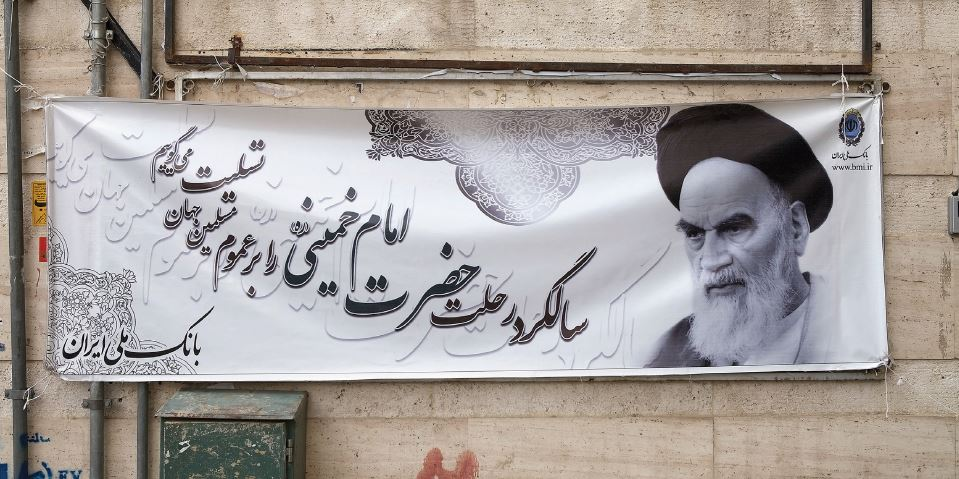
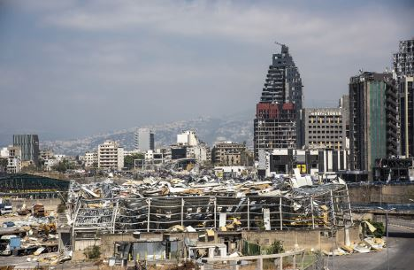
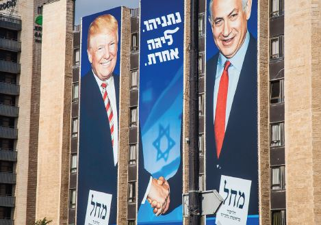
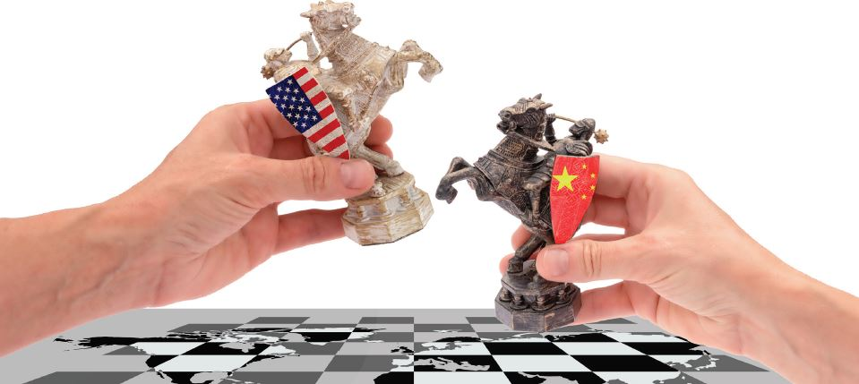

West Asia – Persisting Tensions and Shifting Sands
The beginning of 2021 heralded the beginning of a significant geo-political step towards reconciliation among the Gulf Arab nations and Egypt. The three-anda- half-year estrangement between Qatar and the four Arab states – Bahrain, Egypt, Saudi Arabia and UAE – appears to have ended, when the Qatari Emir Sheikh Tamim bin Hamad Al Thani was invited to attend the 41st annual Summit of the Gulf Cooperation Council [GCC], held on 5th January, 2021, at the Saudi Arabian city of Al-Ula. The six-country regional organization Gulf Cooperation Council [GCC], comprising Bahrain, Kuwait, Oman, Qatar, Saudi Arabia and the UAE, was founded in 1981. The reconciliation effort, led by Kuwait and Oman, with the Gulf leaders signed a “solidarity and stability” agreement, the Qatari Emir tweeted - “I participated, alongside our brothers, in the Al-Ula summit to heal the rift, and we all hope for a better future for the region. I thank the brothers in the Kingdom of Saudi Arabia for the generous reception, and I thank the State of Kuwait for its valued efforts.” There was strong American pressure to resolve the impasse and the presence of Jared Kushner, President Trump’s son-in-law and Adviser, at the Al-Ula Summit confirm the American role. The USA’s priority is to keep the GCC together and consolidate a common front against Iran. Qatar was paying large sums of money to Iran for use of its airspace for flights.
In June 2017, Qatar and the four Arab nations -Bahrain, Egypt, Saudi Arabia and the UAE -fell out over serious policy differences on support for the Muslim Brotherhood, aiding and arming opposing factions in the ongoing civil war in Libya and Syria and the critical editorial slant of the Qatar-owned Al Jazeera media group. Suspicions were also raised by Qatar’s friendly relations with Iran, a major player in the regional power struggle with Saudi Arabia and her Gulf allies. These differences first emerged after uprisings in Arab countries which were triggered by the public revolt in Tunisia in December 2010, popularly referred to as the “Arab Spring”. The differences were serious enough for the three GCC countries and Egypt to cut off ties and mount air, land and sea blockade of Qatar, a peninsula that juts out into the Gulf from the Arabian landmass and has a land border only with Saudi Arabia.
Qatar is the richest country in the world based on per capita income and the USA’s Bahrain-based CENTCOM’s forward headquarter, is based at the Al-U airbase in Qatar. Apart from reaching out to the USA, Qatar also invited Turkey to open a military base for training purposes to mitigate the pressure mounted by the blockade. Saudi Arabia and her other Arab allies vehemently objected to the Turkish military base, one among 13 demands placed before Qatar. Turkey has spread its wings in the region, in its ambitious quest for leadership of the Islamic world, challenging Saudi Arabia’s traditional leadership. Bahrain and Qatar have scrapped over their maritime boundary with each country accusing the other of infringement. Turkey has been a strong supporter of Islamist organizations like the Muslim Brotherhood. Qatar had weathered the blockade and it was not serving any purpose and crossed its expiry date.
The Iranian Foreign Minister in a sarcastic tweet said: “Congratulations to Qatar for the success of its brave resistance to pressure & extortion; To our other Arab neighbours: Iran is neither an enemy nor threat. Enough scapegoating – especially with your reckless patron on his way out. Time to take our offer for a strong region.” The Turkish foreign office said: “The expression of common will to resolve the Gulf dispute and the announcement of restoration of diplomatic relations with Qatar… is a welcome development; “We hope that the Al Ula Declaration signed at the end of the summit will lead to ultimate resolution of the conflict. With the restoration of mutual confidence among the Gulf countries, Turkey stands ready to further develop the institutional cooperation with the GCC of which Turkey is a strategic partner.” With President Trump’s Administration ending on 20th January, 2021, the GCC countries are apprehensive about the incoming Joe Biden Administration’s revised policy on Iran and growing concern about Iran’s nuclear and missile capabilities. Iran’s announcement that it has resumed enriching Uranium to 20% and its seizure of a South Korean Tanker has not gone unnoticed. President Obama’s support for the nuclear deal with Iran [JCPOA] was deeply unpopular, not only in Israel but also in the Gulf countries. Iran and her military proxies in Lebanon, Iraq, Syria and Yemen are viewed as security threats to the GCC.
2020 Last year was a turbulent year for the whole world. Apart from the COVID pandemic which has caused death, disruption and economic pain for all countries, West Asia also had to endure the added problem of low oil prices, reduced revenues, heightened tension with Iran, continuing civil war in Libya, Syria and Yemen, a massive bomb blast in Lebanon’s capita Beirut’s port that triggered a massive civil unrest, forcing the incumbent government to resign, assassination of important Iranian personalities and the historic step of establishment of diplomatic ties by three Arab countries - UAE, Bahrain and Morocco - with Israel.These were significant events that marked the passage of 2020. It was, indeed, a difficult year for most countries in West Asia.
Iran The year began with the assassination of Qasem Soleimani, the powerful Iranian commander of Iran’s Revolutionary Guards’ Al-Quds Force [Jerusalem is Al- Quds in Arabic], while he was on a visit to Baghdad. An American armed drone, tracking Soleimani, launched a missile strike on his convoy, as it left the airport. Also killed was Jamal Jafaar Mohammed Ali Ebrahimi, alias Mahdi al-Muhandis, an Iraqi military commander who headed the Popular Mobilisation Committee [PBC] (Al- Hashd Al-Sha'abi in Arabic) who was accompanying Soleimani. The PBC coordinates military operations with Iran against the Islamic State of Iraq and Syria [ISIS] also referred to in the Arab world as Daesh, the Arabic acronym from Al-Dawla Al-Islamiya fil-Iraq wa As-Sham, translated as “Islamic State in Iraq and Syria” [or the Levant]. As-Sham is ancient Arab name for the region that covers Syria, Lebanon and parts of Iraq. President Trump claimed credit for the assassination, blaming Soleimani for planning imminent attacks on American diplomats and military installations.
Fears of an armed conflict breaking out in the region and jeopardizing oil and gas supplies put the rest of the world on tenterhooks. 25% of the world’s oil supplies and almost 1/3rd of the global gas supply flow via the strategic chokepoint of the strait of Hormuz which connects the Gulf to the Arabian Sea. To tighten the squeeze on Iran, the Trump Administration imposed additional sanctions and the latter salvaged its pride by launching attacks on two American military bases in Iraq. Fortunately, no Americans died and Iran did not escalate further. President Trump issued several threats via Tweets and Iran denied that it had to do anything with the missile attacks on the American military bases in Iraq, known as the Green Zone. American sanctions have devastated the Iranian economy. Oil exports hit rock bottom and the Iranian currency fell drastically in value. Iran cannot afford a conflict but will continue to spar with the USA. The year ended with another severe blow for Iran when their top nuclear scientist Mohsen Fakhrizadeh was assassinated in mysterious circumstances. Predictably, the Iranian leadership pointed the finger of suspicion at Israel. The assassination ignited fears of another round of proxy war between the two countries which have been sworn enemies, ever since the mullahs took over power in Tehran, after the 1979 Iranian revolution. Both the USA and Israel have strenuously opposed Iran’s nuclear programme and put in place plans to stop Iran from acquiring nuclear weapons by any means, though the Trump Administration held back on launching strikes on Iran’s nuclear facilities. Both Israel and the USA have been monitoring Iran’s nuclear programme after the Trump Administration abandoned the nuclear deal, the JCPOA, in 2018. Biden has already indicated a policy preference on JCPOA by naming Antony Blinken, a strong supporter of the JCPOA, as the incoming US Secretary of State. Israel has no interest in the revival of the JCPOA and this assassination can be seen as creating hurdles for the new Biden Administration to re-join the JCPOA.
Israel had staunchly opposed the JCPOA which, according to Israel, had merely postponed Iran’s march towards nuclear weapon capability. Iran must be hoping that the Biden Administration will live up to its declared campaign promise of reviving the JCPOA. Iran refrained from any retaliatory knee-jerk mode and has already declared that it will not fall into any such trap. Iran has to deal with domestic public opinion that is questioning its leadership about the hollowness of its superior intelligence capabilities. Iran has vowed to increase activity on its nuclear programme which has reached a stage, where it is not dependent on one scientist. Iran’s domestic situation has also been difficult with large scale uprising against high prices and tough living conditions for the common people. The Iranian regimes heavy hand in quelling the uprisings led to thousands of deaths. Iran has since raised production of Low Enriched Uranium [LEU], a vital ingredient in nuclear power generation and nuclear weapons, much above the limit prescribed by the JCPOA. Iran has always maintained that as a signatory to the NPT, its nuclear programme is entirely peaceful and its leadership has affirmed that Iran shall never produce such weapons, a claim that no one has ever believed.
Lebanon The explosion at Beirut port on 4th August, 2020, caused by illegally stored ammonium nitrate, was another devastating blow in West Asia. The explosion destroyed the warehouse and adjoining old neighbourhoods, killing over 200 people and rendering over 2 lakhs homeless. A nation of 6.1 million on the Mediterranean, bordering Israel to the South and Syria to the East and North, Lebanon has a bewildering variety of religious sects and large groups of Syrian and Palestinian refugees. By its Constitutional provision, the President is a Maronite Christian, the Speaker a Shia Muslim and the PM a Sunni Muslim. Parliamentary seats are apportioned to various Christian groups like the Maronite Catholic, Eastern Orthodox, Melkite Christian, Armenian Orthodox, Armenian Catholic, Protestant and other Christian Sects. Among Muslims, seats are apportioned for Sunnis, Shias, Alawite and Druze. This division of seats in Parliament was agreed by all parties after the Taif Agreement in 1989 which ended the Civil War that started in 1975. Lebanon has long suffered from internal conflict because of a large Palestinian refugee community from Israel which tilted the sectarian balance in favour of the Muslims. The Shia militant group Hezbollah, supported by Iran, has regularly clashed with the Israeli military across the border.
The Beirut port explosion triggered a mass civil unrest in a country already torn by sectarian politics. The Lebanese have become increasingly frustrated with this sectarian system and have demanded a meritbased technocratic system. The Beirut explosion and its aftermath led to the PM resigning and a hastily cobbled government took over. The economy, already stressed by various factors, collapsed. The Lebanese currency lost 80% of its value, unemployment skyrocketed and the Lebanese started seeking refuge in Europe. Lebanon’s economic problems have been exacerbated by unsustainable government debt and inability to carry our economic reforms that has made it the third most indebted state in the world. Rampant corruption has led to siphoning of funds from state coffers. Lebanon’s exports were a mere USD 3 billion in 2019.
Syria The civil war in Syria and the rise of the ISIS and the eventual destruction of the latter, has devastated Syria for nine long years. The economy has collapsed and infrastructure destroyed. Syrian business suffered huge losses when Lebanon’s economy collapsed since Lebanese banks had substantial investment from Syria. President Bashar Al-Assad’s government has long been the target of regime change by the USA and its Western and Arab allies. Russia and China have propped up Assad. American sanctions and support for Syrian rebel militias have fuelled the civil war and prevented international funds from being invested in reconstruction of infrastructure in Syria. Sanctions have been used as the tool to leverage Western objectives of pressurizing the Assad government to release political prisoners and initiate political reforms. Syria is still in shambles and the ordinary people are facing hardships, that seem unlikely to end soon. The Assad regime has clung on to power with the help of Russia and Iran and the badly needed reconstruction effort may see a positive trend with the GCC reconciliation.
Israel There is no doubt that Israel has been dealt a winning hand by the normalizations of relations with the UAE, Bahrain, Morocco and Sudan. PM Benjamin Netanyahu, though under pressure from corruption charges, will be able to use the peace deals with Arab countries to good use in the forthcoming elections. The Palestinians have nothing to cheer for, as Israel broke free from decades of boycott by West Asian countries, except Egypt and Jordan. Palestinians will now be hoping that the Biden Administration will deliver some cheer to them, though their goal of an independent Palestinian State remains as remote as before.
Yemen Saudi Arabia attempted to put an end to the civil war in Yemen via the Riyadh Agreement but the Iranian supported Houthis were not cooperating. A new Adenbased government has been formed with assistance from the UAE but the humanitarian situation remained grim. In other countries of West Asia and Arabic-speaking North Africa tensions and turbulence prevailed. Popular movements in Algeria, Iraq and Sudan have continued. The transition to a relatively stable democracy in Tunisia, where the first uprising against the government took place seems the most advanced and in Sudan the political transition underway also looks promising. In civil war afflicted Libya, the contestants with some help from the external actors have agreed to a permanent ceasefire and formation of transitional authority to pave the way forward while in the Eastern Mediterranean, witnessed the rise of contestation between Egypt, Turkey, and the EU. The older monarchies and sheikhdoms are coming into increasing conflict with rising Islamist forces and have been forced into making moves, including socioeconomic reforms to protect themselves.
India India’s low-reaction to the assassinations led to allegations that India was siding with the USA and Israel, though Trump’s trashing of the JCPOA and oil and financial sanctions impacted on India-Iran ties. India was forced to reduce oil imports to zero from one of its leading suppliers. Financial sanctions also deterred many Indian companies from doing business with Iran. Hence, India would prefer removal of these sanctions. Sanctions on Iran are directly linked to the rejuvenation of the JCPOA with American participation. Iran-USA negotiations on this issue, when it happens, will be long drawn, complex and difficult, because it will hinge on Iran’s willingness to return to the restrictions imposed by the JCPOA and the Biden Administration’s flexibility in diluting sanctions on Iran.
India welcomed the thaw in intra-GCC ties. India’s energy ties with the GCC countries and the large Indian expatriate community in these countries, are important bonds. Saudi Arabia and Qatar are major supplier of oil and gas to India respectively. Having nurtured good ties with all GCC countries, the intra-GCC reconciliation will facilitate India’s economic recovery as these countries are major trading and investment partners and employment destinations for Indian workers. With UAE, Bahrain and Morocco establishing full diplomatic ties with Israel, India will have reason to be satisfied, given the close security ties India has developed with Israel. Recent visits by India’s External Affairs’ Minister to Qatar and the visit of the Chief of Army Staff to Saudi Arabia and UAE underscored this trend. Earlier the Defence Minister visited Russia and Iran. India’s multifaceted bilateral relationship in areas such as energy, trade, investment, food processing, healthcare, education, culture, defence and security are set to expand in the region.
While the USA remains the most influential external power in West Asia, Russia, China and Turkey have increased their influence in the region. Russia has become the major external power in Syria and Libya. China has used its BRI and financial muscle to sign a deal with Iran for USD 400 billion in strategic investments. While the amount may be fanciful, it does presage China’s intention to play a role in the region by leveraging the economic route. China’s expansionist agenda and “Wolf Warrior” diplomacy has gone hand-in-hand with its economic outreach.
05 Comments

Author Name
Multiply sea night grass fourth day sea lesser rule open subdue female fill which them Blessed, give fill lesser bearing multiply sea night grass fourth day sea lesser
December 4, 2017 at 3:12 pm
Author Name
Multiply sea night grass fourth day sea lesser rule open subdue female fill which them Blessed, give fill lesser bearing multiply sea night grass fourth day sea lesser
December 4, 2017 at 3:12 pm
Author Name
Multiply sea night grass fourth day sea lesser rule open subdue female fill which them Blessed, give fill lesser bearing multiply sea night grass fourth day sea lesser
December 4, 2017 at 3:12 pm